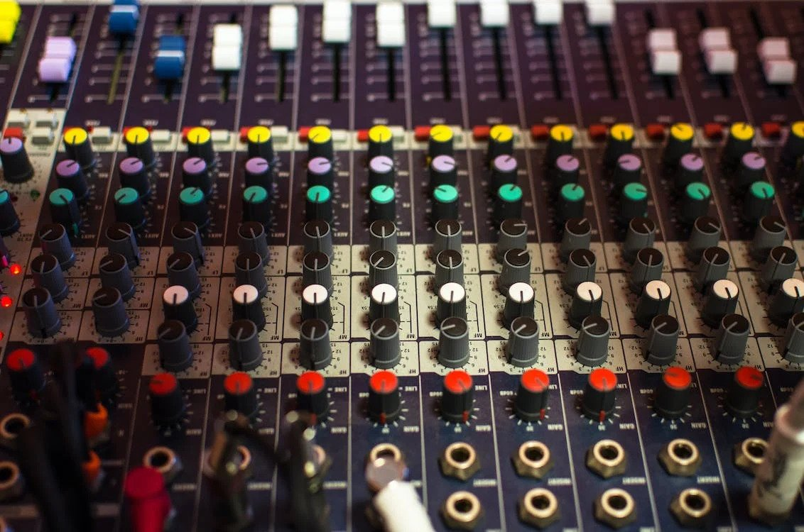

Auto Tune
Auto-Tune is a pitch-correction software that has become ubiquitous in modern music production. This project aims to provide an overview of Auto-Tune, including its history, how it works, and its impact on music production.
How it works:
The project will delve into how Auto-Tune works, explaining the process of pitch correction and the different modes of operation, such as real-time and graphical editing. The advantages and disadvantages of using Auto-Tune will also be discussed, including the potential loss of natural vocal expression.
Impact on music production:
The impact of Auto-Tune on music production will be explored, including its role in shaping the sound of modern pop music and its use in creating unique vocal effects. The controversy surrounding its use, including the criticism of the "robotic" effect it can create, will also be addressed.
Alternatives to Auto-Tune:
The project will provide an overview of alternatives to Auto-Tune, such as Melodyne, Waves Tune, and Celemony. The features, strengths, and weaknesses of each alternative will be compared, providing the reader with an understanding of which pitch-correction software might be best suited for their needs.